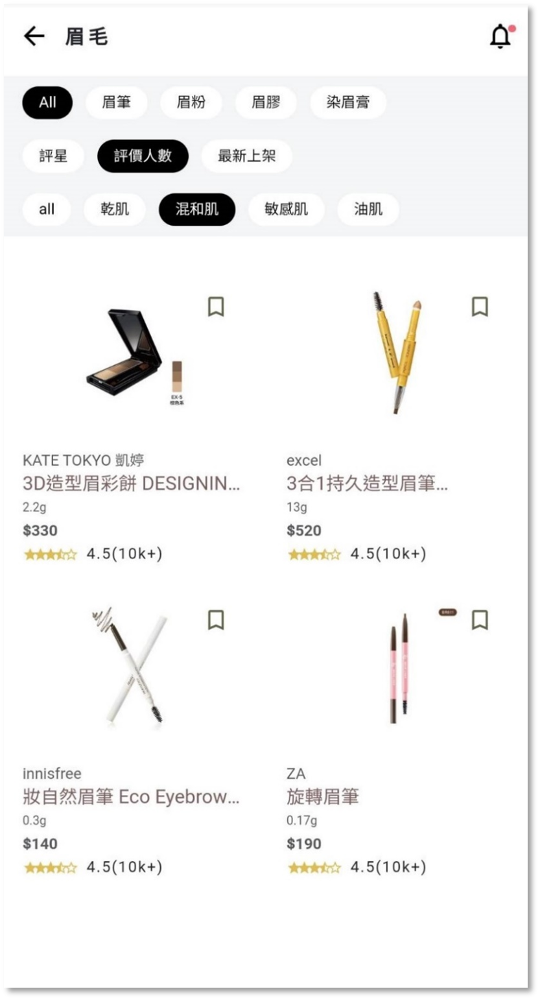
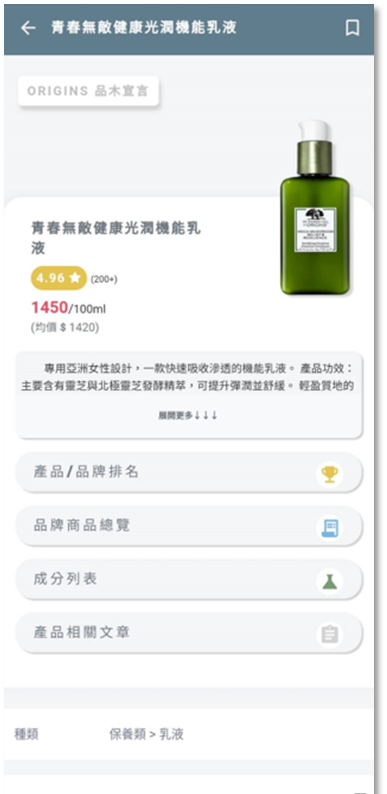
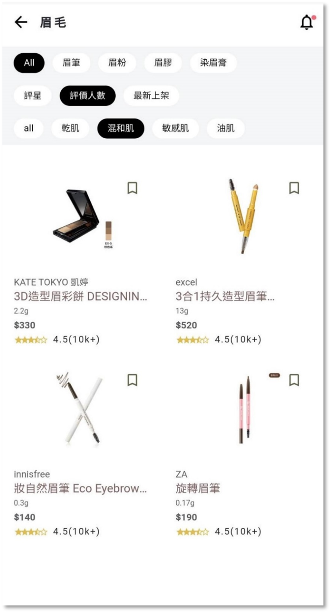
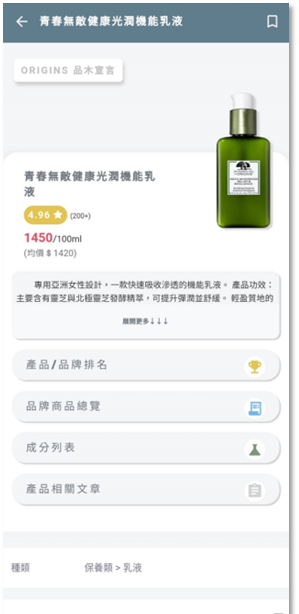

<商品>展示/說明
 



- 功能連結展示: 商品連結
- 功能介紹:
此頁面提供使用者根據分類、排行榜、新品、品牌或直接查找關鍵字等方式來尋找或觀看產品各項資訊、詳情。而當使用者點擊上方的分類圖示時，會跳轉至相對應的產品分類頁。
● 包含此產品之概述、平均價格、網友評論、產品排名、成分列表、此品牌的產品總覽、更多相關文章皆會顯示於此頁面。
● 藍色框格中標示的是擁有此產品的人也在使用的產品。我們利用系統蒐集到的各使用者擁有產品清單，以Weka做關聯規則的資料探勘，最後將擁有此產品的使用者也會使用的產品置於此處。